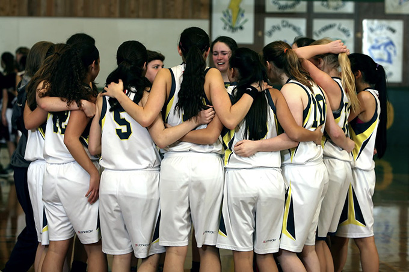

My daughter is 8 years old. Almost 9. And she trains gymnastics 19 hours a week. Four hours after school most days, then another four starting at 7am on Saturday morning. Four more hours before most kids her age have even had breakfast. And that's before competitions even enter the picture.
Then she goes to school, where she's expected to throw herself into footy or basketball.
I'll be honest. I don't really mind if she doesn't.
PE Exists for a Good Reason. Just Not Necessarily Her Reason.
I want to be upfront here. I'm not saying school sport is useless. I'm not saying gymnasts should be exempt. I'm not having a go at PE teachers.
School sport exists because a lot of kids simply aren't active outside of school. For plenty of students, PE or a lunchtime game is the only structured physical activity they get all week. That matters. The case for keeping kids moving is solid, and mandatory PE is one of the few tools schools have to reach every student, no matter what's happening at home.
But that logic, and it is good logic, is built around a specific kind of kid. A kid who might otherwise spend their afternoons on the couch. A kid for whom school sport might be the main event.
My daughter is not that kid.
She's already well past any reasonable physical activity guideline, not by going for a bike ride on weekends, but through structured, coached, high-performance training in a demanding sport. To put that into perspective, at the peak of my own competitive Latin and Ballroom dancing career, I was doing just over 20 hours a week. I was a grown adult. She's 8. The assumptions behind compulsory PE just don't really fit her situation, and I think that's worth saying out loud.
I Did Some Googling
While researching this post, I found this study. Researchers looked at 131 young gymnasts, around 11 years old, and compared kids who only did gymnastics against kids who also played other sports. They tested jumping, balance, core strength, movement skills, the whole lot.
The result? No meaningful difference in fitness or athletic ability between the two groups.
Kids doing gymnastics alone weren't missing out on physical development. Kids doing multiple sports didn't have a big advantage. At a base fitness level, gymnastics was doing the job on its own.
The researchers did flag one important caveat. The gymnastics-only kids were training a lot of hours, and specialising at a young age does carry real risks like overuse injuries, burnout, and early dropout. And honestly, that's always in the back of my mind. I also came across this piece from Hopkins Medicine on the same topic, which is worth a read if you want another perspective on early specialisation.
But those risks don't disappear by adding school basketball on top. If anything, mandatory participation in extra sports raises its own questions for a kid already training at this level.
High-level gymnasts spend years learning proper warmup, progressive loading, correct landing mechanics, body awareness, and flexibility. Then PE asks them to play a sport they rarely practise, on concrete or asphalt, with minimal warmup, alongside classmates of completely different fitness levels. I'm not saying school sport is dangerous. But is the research saying multi-sport participation reduces injury risk really applicable to elite junior athletes, or is it just based on the general population? Does it automatically mean your elite gymnast should sprint flat-out in cross-country on top of everything else?
My daughter has more than once come home from school sport with a minor injury that didn't happen at gymnastics. Just saying.
In fact, we now give her a blanket exclusion from all school sport in the week leading up to a competition. That decision didn't come from nowhere. About four days before a major comp, her PMP class was playing a game that involved jumping and running flat-out on a hard surface, with no warmup. She hurt her knee. She recovered in time and didn't miss the competition, but she did lose several days of preparation that her team was counting on. So now we just take that week off the table entirely. On those days she either sits with a book or helps out as a sort of assistant coach for the lesson. The school has been genuinely understanding about it, which we're grateful for.
But What About Teamwork?
This is the one I hear most often.
"Individual sports like gymnastics don't teach cooperation and leadership. Team sport does."
Except gymnastics, at least in the Australian Levels program, isn't really an individual sport at the junior level.
Below Level 5, gymnasts don't compete as individuals at all. They compete as a team. The athletes don't even get their own scores during competition. Only the team total. The whole focus is collective performance. Even by Level 5, when individual scores start to feature, the team culture is already deep and well established.

My daughter spends 19 hours every week training alongside teammates. She supports them when they're nervous before a comp. She celebrates their improvements. She learns from the older girls and, increasingly, she contributes to the experience of the younger ones. She represents a club, not just herself.
The idea that she's missing out on teamwork because she isn't playing school netball doesn't really stack up when you look at what she's actually doing five days a week.